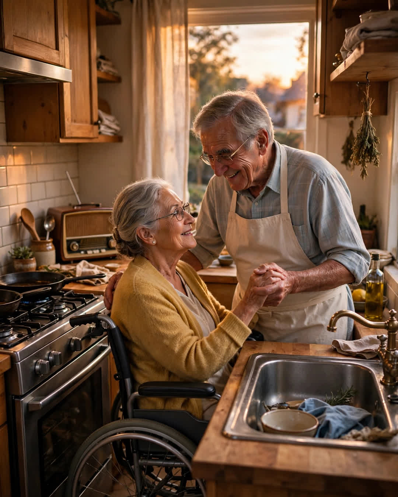

Kitchen Dancing
A Clipp Kaili original story

Every evening of my parents' marriage, at six-fifteen, my father turned on the kitchen radio and danced with my mother between the stove and the sink.
It did not matter what was cooking. It did not matter what song it was. When the old kitchen radio crackled on — the one with the dial that stuck and the antenna wrapped in foil — Dad would dry his hands on his apron, hold one out, and say the same words he had said since 1979.
"May I have this dance, Mrs. Carter?"
And Mom, every single time, pretended to think about it.
"Well," she'd say, "the potatoes aren't watching themselves, Mr. Carter." Then she'd take his hand, and for the length of one song, sometimes two, my parents danced in a kitchen barely wide enough for the refrigerator door to open.
I grew up doing homework to that music. I thought every house had it. It took leaving for college, coming home with a roommate, and watching her stand in our doorway with her mouth open to understand that other people's parents mostly argued over the dishes. Mine slow-danced beside them.
The songs changed across the decades. The dancing didn't. Through Dad's layoff. Through Mom's mother's funeral, when she danced with tears running straight down and her head on his shoulder the whole song. Through four kids, two mortgages, one house fire, and a flood that took the floor they'd danced on — they danced on the new floor the week it was laid, in their socks, before the furniture came back.
Then, in February, Mom had the stroke.
She came home in April, in a wheelchair, her left side quiet, her speech down to a handful of words she had to fight for. The house got ramps and rails and a hospital bed in the den. The kitchen radio stayed off. Nobody said why. It was just one of the sounds the house had lost.
Dad cared for her the way he has loved her — without ceremony, without complaint, completely. He learned the medications. He learned the exercises. He learned how to lift her the way the therapist showed him, counting under his breath.
And then one evening in June, at six-fifteen, I heard it from the hallway.
Static. Then music.
I came around the corner and stopped. Dad had wheeled Mom's chair to the middle of the kitchen, between the stove and the sink. He had put on his apron. He took her good hand in his, and her quiet hand too, lifting it gently to his shoulder, and he began to move — small steps, slow circles — turning her chair with the care of a man steering something priceless.
He was dancing for both of them.
Mom's head rested against him as far as she could reach. One tear ran down. Her mouth worked hard at a word, and this time, the word won.
"Again," she said.
He laughed like a young man. "Yes, ma'am. Every evening. Same as always."
The potatoes burned that night. Nobody cared.
Some couples stop dancing when the music gets hard to hear.
Mine just learned to dance in a smaller kitchen, to a slower song — and my father counts that among the best dances of his life, because she was in his arms for every step.
This story is a work of fiction, written to touch hearts and bring families closer.
← Back to all stories